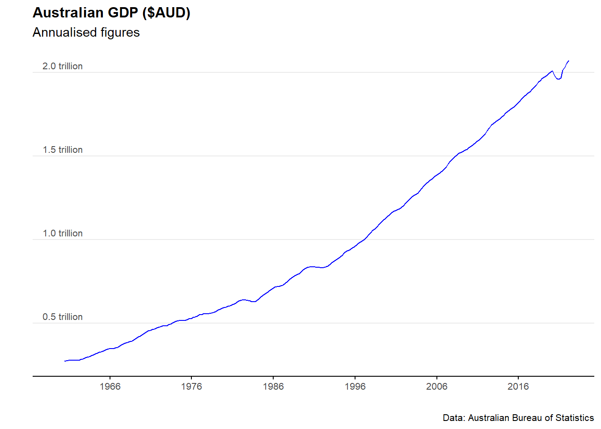

Chapter 10 Economic indicators
10.1 Overview
Australia has exceptional financial and economic institutions. Three of these institutions release periodic data useful for economic analysis:
As usual, there are catches. Most of this data is in inconsistent formats (the reasons for which continue to baffle me). What’s more, it’s currently not possible to ping databases or API’s for access to this data… it is mainly accessed through spreadsheets.
The scripts below run through some of the main ways to import, clean, and analyse Australian macroeconomic data in R.
Some of the key packages we’ll use are readabs and readrba.
To get started, let’s install and load packages.
#Loads the required required packages
pacman::p_load(ggmap, ggplot2, dplyr, tmaptools, RCurl, jsonlite, tidyverse, leaflet, writexl, readr, readxl, readabs, readrba,lubridate, zoo, scales)10.2 Gross Domestic Product
To get GDP data from the ABS, we’ll use the read_abs function from the readrba package.
#For simplicity, we keep the download function seperate to the analysis
all_gdp <- read_abs("5206.0")#Select the seasonally adjusted data and filter for data and value columns
gdp_level <- all_gdp %>%
filter(series == "Gross domestic product: Chain volume measures ;",
!is.na(value)) %>%
filter(series_type =="Seasonally Adjusted") %>%
dplyr::select(date,value) %>%
dplyr::rename(quarterly_output=value)
gdp_level <- gdp_level %>%
mutate(quarterly_growth_rate =
((quarterly_output / lag(quarterly_output,1)-1))*100) %>%
mutate(annual_gdp =
rollapply(quarterly_output,
4,
sum,
na.rm=TRUE,
fill = NA,
align = "right")) %>%
mutate(annual_gdp_trillions=annual_gdp/1000000)%>%
mutate(annual_growth_rate =
((annual_gdp / lag(annual_gdp, 4) - 1))*100)%>%
mutate(Quarter_of_year =
lubridate::quarter(date,
with_year = FALSE,
fiscal_start = 1))
#Set a baseline value
gdp_level$baseline_value <- gdp_level$quarterly_output[
which(gdp_level$date =="2022-03-01")]
gdp_level <- gdp_level %>%
mutate(baseline_comparison =
(quarterly_output/baseline_value)*100)
tail(gdp_level)## # A tibble: 6 x 9
## date quarterly_output quarterly_growth_rate annual_gdp annual_gdp_trill~
## <date> <dbl> <dbl> <dbl> <dbl>
## 1 2020-12-01 501644 3.28 1960142 1.96
## 2 2021-03-01 510590 1.78 1967236 1.97
## 3 2021-06-01 514784 0.821 2012745 2.01
## 4 2021-09-01 505413 -1.82 2032431 2.03
## 5 2021-12-01 523725 3.62 2054512 2.05
## 6 2022-03-01 527676 0.754 2071598 2.07
## # ... with 4 more variables: annual_growth_rate <dbl>, Quarter_of_year <int>,
## # baseline_value <dbl>, baseline_comparison <dbl>Now we can plot the GDP data for Australia.
plot_gdp <- ggplot(data=gdp_level)+
geom_line((aes(x=date, y=annual_gdp_trillions)), col="blue") +
labs(title = "Australian GDP ($AUD)",
subtitle = "Annualised figures",
caption = "Data: Australian Bureau of Statistics",
y = "",
x = " ")+
scale_y_continuous(breaks = c(0,0.5,1.0,1.5,2.0,2.5),
labels = label_number(suffix = " trillion"))+
scale_x_date(date_breaks = "10 years", date_labels="%Y")+
theme_minimal() +
theme(legend.position="bottom")+
theme(plot.title=element_text(face="bold", size=12))+
theme(plot.subtitle=element_text(size=11))+
theme(plot.caption=element_text(size=8))+
theme(axis.text=element_text(size=8))+
theme(panel.grid.minor = element_blank())+
theme(panel.grid.major.x = element_blank()) +
theme(axis.title.y =
element_text(margin = margin(t = 0, r = 0, b = 0, l = 0)))+
theme(axis.text.y = element_text(vjust = -0.5,
margin = margin(l = 20, r = -45)))+
theme(axis.line.x = element_line(colour ="black", size=0.4))+
theme(axis.ticks.x = element_line(colour ="black", size=0.4))
plot_gdp
10.3 Unemployment rate
Download the data
#Download the time sreies
all_unemployment <- read_abs("6202.0")Clean and analyse the data
unemployment_rate <- all_unemployment %>%
filter(series == "Unemployment rate ; Persons ;",!is.na(value)) %>%
filter(table_title=="Table 1. Labour force status by Sex, Australia - Trend, Seasonally adjusted and Original") %>%
filter(series_type =="Seasonally Adjusted") %>%
mutate(mean_unemployment_rate=mean(value)) %>%
mutate(percentile_25=quantile(value,0.25))%>%
mutate(percentile_75=quantile(value,0.75)) %>%
dplyr::select(date,value,mean_unemployment_rate,percentile_25,percentile_75)
tail(unemployment_rate)## # A tibble: 6 x 5
## date value mean_unemployment_rate percentile_25 percentile_75
## <date> <dbl> <dbl> <dbl> <dbl>
## 1 2021-11-01 4.60 6.74 5.47 8.01
## 2 2021-12-01 4.16 6.74 5.47 8.01
## 3 2022-01-01 4.18 6.74 5.47 8.01
## 4 2022-02-01 4.02 6.74 5.47 8.01
## 5 2022-03-01 3.93 6.74 5.47 8.01
## 6 2022-04-01 3.85 6.74 5.47 8.01Plot the data
plot_unemployment_rate <- ggplot(data=unemployment_rate)+
geom_line(aes(x = date, y = value), col = "blue") +
labs(title = "Unemployment rate",
subtitle = "Subtitle goes here",
caption = "Data: Australian Bureau of Statistics",
y = "Unemployment rate (%)",
x = " ")+
scale_y_continuous(labels = scales::comma)+
scale_x_date(date_breaks = "10 years", date_labels="%Y")+
theme_minimal() +
theme(legend.position="bottom")+
theme(plot.title=element_text(face="bold", size=12))+
theme(plot.subtitle=element_text(size=11))+
theme(plot.caption=element_text(size=8))+
theme(axis.text=element_text(size=8))+
theme(panel.grid.minor = element_blank())+
theme(panel.grid.major.x = element_blank()) +
theme(axis.title.y =
element_text(margin = margin(t = 0, r = 0, b = 0, l = 0)))+
theme(axis.text.y = element_text(vjust = -0.5,
margin = margin(l = 20, r = -15)))+
theme(axis.line.x = element_line(colour ="black", size=0.4))+
theme(axis.ticks.x = element_line(colour ="black", size=0.4))
plot_unemployment_rate10.4 Inflation (CPI)
Download the data
all_CPI <- read_abs("6401.0")Clean and analyse the data
Australia_CPI <- all_CPI %>%
filter(series == "Percentage Change from Corresponding Quarter of Previous Year ; All groups CPI ; Australia ;",!is.na(value)) %>%
mutate(mean_CPI=mean(value)) %>%
mutate(percentile_25=quantile(value,0.25))%>%
mutate(percentile_75=quantile(value,0.75)) %>%
dplyr::select(date, value,mean_CPI,percentile_25,percentile_75)
tail(Australia_CPI)## # A tibble: 6 x 5
## date value mean_CPI percentile_25 percentile_75
## <date> <dbl> <dbl> <dbl> <dbl>
## 1 2020-12-01 0.9 4.94 1.9 7.3
## 2 2021-03-01 1.1 4.94 1.9 7.3
## 3 2021-06-01 3.8 4.94 1.9 7.3
## 4 2021-09-01 3 4.94 1.9 7.3
## 5 2021-12-01 3.5 4.94 1.9 7.3
## 6 2022-03-01 5.1 4.94 1.9 7.3#Can add in the below line to filter
#filter(date>"2010-01-01") %>%Plot the data
plot_CPI <- ggplot(data=Australia_CPI %>%
filter(date>(as.Date("2000-01-01"))))+
geom_rect(aes(xmin=as.Date("2000-01-01"),
xmax=as.Date("2023-03-01"),
ymin=2,
ymax=3),
alpha=0.01,
fill="grey")+
geom_line(aes(x = date, y = value), col = "blue") +
scale_x_continuous(expand=c(0,0))+
labs(title = "Inflation (as measured by the CPI)",
subtitle = "Subtitle goes here",
caption = "Data: Australian Bureau of Statistics",
y = "(%)",
x = " ")+
scale_y_continuous(labels = scales::comma)+
scale_x_date(date_breaks = "5 years", date_labels="%Y")+
theme_minimal() +
theme(legend.position="bottom")+
theme(plot.title=element_text(face="bold", size=12))+
theme(plot.subtitle=element_text(size=11))+
theme(plot.caption=element_text(size=8))+
theme(axis.text=element_text(size=8))+
theme(panel.grid.minor = element_blank())+
theme(panel.grid.major.x = element_blank()) +
theme(axis.title.y =
element_text(margin = margin(t = 0, r = 0, b = 0, l = 0)))+
theme(axis.text.y = element_text(vjust = -0.5,
margin = margin(l = 20, r = -15)))+
theme(axis.line.x = element_line(colour ="black", size=0.4))+
theme(axis.ticks.x = element_line(colour ="black", size=0.4))
plot_CPIPlot a histogram of the data
plot_CPI_hist <- ggplot(Australia_CPI, aes(x=value)) +
geom_histogram(aes(y=..density..),
colour="black", fill="lightblue")+
geom_density(alpha=.5, fill="grey",colour="darkblue")+
scale_x_continuous(expand=c(0,0))+
labs(title = "Consumer Price Index: Histogram",
subtitle = "Subtitle goes here",
caption = "Data: Australian Bureau of Statistics",
y = "(%)",
x = " ")+
theme_minimal() +
theme(legend.position="bottom")+
theme(plot.title=element_text(face="bold", size=12))+
theme(plot.subtitle=element_text(size=11))+
theme(plot.caption=element_text(size=8))+
theme(axis.text=element_text(size=8))+
theme(panel.grid.minor = element_blank())+
theme(panel.grid.major.x = element_blank()) +
theme(axis.title.y =
element_text(margin = margin(t = 0, r = 0, b = 20, l = 0)))+
theme(axis.text.y = element_text(vjust = -0.5,
margin = margin(l = 20, r = -2)))+
theme(axis.line.x = element_line(colour ="black", size=0.4))+
theme(axis.ticks.x = element_line(colour ="black", size=0.4))
plot_CPI_hist
10.5 Wage Price Index
Download the data
all_wpi <- read_abs("6345.0")Clean and analyse the data
Australia_WPI <- all_wpi %>%
filter(series == "Percentage Change From Corresponding Quarter of Previous Year ; Australia ; Total hourly rates of pay excluding bonuses ; Private and Public ; All industries ;",
!is.na(value)) %>%
filter(series_type=="Seasonally Adjusted") %>%
mutate(mean_WPI=mean(value)) %>%
dplyr::select(date, value,mean_WPI)
tail(Australia_WPI)## # A tibble: 6 x 3
## date value mean_WPI
## <date> <dbl> <dbl>
## 1 2020-12-01 1.4 3.06
## 2 2021-03-01 1.5 3.06
## 3 2021-06-01 1.7 3.06
## 4 2021-09-01 2.2 3.06
## 5 2021-12-01 2.3 3.06
## 6 2022-03-01 2.4 3.06Plot the data
plot_WPI <- ggplot(data=Australia_WPI)+
geom_line(aes(x = date, y = value), col = "blue") +
labs(title = "Wage Price Index",
subtitle = "Subtitle goes here",
caption = "Data: Australian Bureau of Statistics",
y = "(%)",
x = " ")+
scale_y_continuous(labels = scales::comma)+
scale_x_date(date_breaks = "5 years", date_labels="%Y")+
theme_minimal() +
theme(legend.position="bottom")+
theme(plot.title=element_text(face="bold", size=12))+
theme(plot.subtitle=element_text(size=11))+
theme(plot.caption=element_text(size=8))+
theme(axis.text=element_text(size=8))+
theme(panel.grid.minor = element_blank())+
theme(panel.grid.major.x = element_blank()) +
theme(axis.title.y =
element_text(margin = margin(t = 0, r = 0, b = 0, l = 0)))+
theme(axis.text.y = element_text(vjust = -0.5,
margin = margin(l = 20, r = -15)))+
theme(axis.line.x = element_line(colour ="black", size=0.4))+
theme(axis.ticks.x = element_line(colour ="black", size=0.4))
plot_WPI10.6 RBA cash rate
Download the data
cash_rate_all<- readrba::read_rba(table_no = "F13")
head(cash_rate_all)## # A tibble: 6 x 11
## date series value frequency series_type units source pub_date
## <date> <chr> <dbl> <chr> <chr> <chr> <chr> <date>
## 1 1990-01-31 Australia Targ~ 17 Monthly Original Per ~ RBA 2022-06-02
## 2 1990-02-28 Australia Targ~ 16.5 Monthly Original Per ~ RBA 2022-06-02
## 3 1990-03-31 Australia Targ~ 16.5 Monthly Original Per ~ RBA 2022-06-02
## 4 1990-04-30 Australia Targ~ 15 Monthly Original Per ~ RBA 2022-06-02
## 5 1990-05-31 Australia Targ~ 15 Monthly Original Per ~ RBA 2022-06-02
## 6 1990-06-30 Australia Targ~ 15 Monthly Original Per ~ RBA 2022-06-02
## # ... with 3 more variables: series_id <chr>, description <chr>,
## # table_title <chr>Clean and analyse the data
cash_rate_Australia <- cash_rate_all %>%
filter(series=="Australia Target Cash Rate") %>%
dplyr::select(date, value)
tail(cash_rate_Australia)## # A tibble: 6 x 2
## date value
## <date> <dbl>
## 1 2021-12-31 0.1
## 2 2022-01-31 0.1
## 3 2022-02-28 0.1
## 4 2022-03-31 0.1
## 5 2022-04-30 0.1
## 6 2022-05-31 0.35Plot the data
plot_cash_rate <- ggplot(data=cash_rate_Australia)+
geom_line(aes(x = date, y = value), col = "blue") +
labs(title = "RBA cash rate",
subtitle = "Subtitle goes here",
caption = "Data: Read RBA",
y = " ",
x = " ")+
scale_y_continuous(labels = scales::comma)+
scale_x_date(date_breaks = "3 years", date_labels="%Y")+
theme_minimal() +
theme(legend.position="bottom")+
theme(plot.title=element_text(face="bold", size=12))+
theme(plot.subtitle=element_text(size=11))+
theme(plot.caption=element_text(size=8))+
theme(axis.text=element_text(size=8))+
theme(panel.grid.minor = element_blank())+
theme(panel.grid.major.x = element_blank()) +
theme(axis.title.y =
element_text(margin = margin(t = 0, r = 0, b = 0, l = 0)))+
theme(axis.text.y = element_text(vjust = -0.5,
margin = margin(l = 20, r = -15)))+
theme(axis.line.x = element_line(colour ="black", size=0.4))+
theme(axis.ticks.x = element_line(colour ="black", size=0.4))
plot_cash_rate10.7 AUD exchange rate
God knows why - but but there are super quirky names for the official exchange rate tables
Download the data
exchange_rate_all<- readrba::read_rba(table_no = (c("ex_daily_8386",
"ex_daily_8790",
"ex_daily_9194",
"ex_daily_9598",
"ex_daily_9902",
"ex_daily_0306",
"ex_daily_0709",
"ex_daily_1013",
"ex_daily_1417",
"ex_daily_18cur")),
cur_hist = "historical")Clean and analyse the data
exchange_rate_AUD <- exchange_rate_all %>%
filter(series=="A$1=USD") %>%
dplyr::select(date, value)
tail(exchange_rate_AUD)## # A tibble: 6 x 2
## date value
## <date> <dbl>
## 1 2022-06-06 0.720
## 2 2022-06-07 0.718
## 3 2022-06-08 0.720
## 4 2022-06-09 0.718
## 5 2022-06-10 0.712
## 6 2022-06-14 0.697Plot the data
plot_exchange_rate_AUD <- ggplot(data=exchange_rate_AUD)+
geom_line(aes(x = date, y = value), col = "blue") +
labs(title = "AUD exchange rate",
subtitle = "Subtitle goes here",
caption = "Data: Reserve Bank of Australia",
y = " ",
x = " ")+
scale_y_continuous(labels = scales::comma)+
scale_x_date(date_breaks = "3 years", date_labels="%Y")+
theme_minimal() +
theme(legend.position="bottom")+
theme(plot.title=element_text(face="bold", size=12))+
theme(plot.subtitle=element_text(size=11))+
theme(plot.caption=element_text(size=8))+
theme(axis.text=element_text(size=8))+
theme(panel.grid.minor = element_blank())+
theme(panel.grid.major.x = element_blank()) +
theme(axis.title.y =
element_text(margin = margin(t = 0, r = 0, b = 0, l = 0)))+
theme(axis.text.y = element_text(vjust = -0.5,
margin = margin(l = 20, r = -15)))+
theme(axis.line.x = element_line(colour ="black", size=0.4))+
theme(axis.ticks.x = element_line(colour ="black", size=0.4))
plot_exchange_rate_AUD